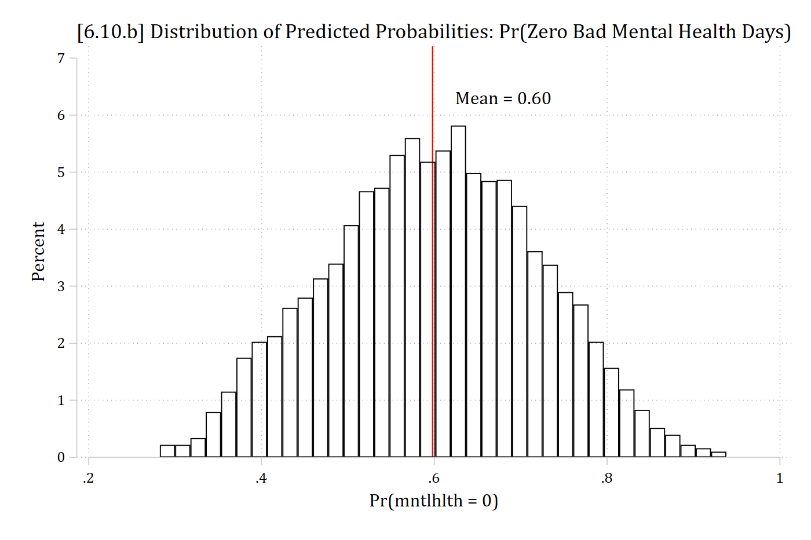

Appendix A6: Stata Code and Tips
- For all sets of lecture notes, there is an accompanying replication Stata do-file (available here or on Brightspace)
- This includes all of the Stata code necessary to recreate anything in the slides
- In this Appendix, I include some comments, notes, and examples for things that are new or that might be hard to follow without more detail
- For more streamlined, less complicated, and more notated do-files showing the basics of the types of analyses covered in this section, see the Assignment example code (also available on Brightspace)
A6.4 Poisson regression model in Stata
use "https://tdmize.github.io/data/data/cda_ah4", clear(cda_ah4.dta | Add Health Wave 4 - | )poisson drinktime i.woman c.age i.college i.race c.income ///
i.spouserole i.parroleIteration 0: Log likelihood = -11915.53
Iteration 1: Log likelihood = -11915.529
Poisson regression Number of obs = 4,983
LR chi2(9) = 1610.51
Prob > chi2 = 0.0000
Log likelihood = -11915.529 Pseudo R2 = 0.0633
-------------------------------------------------------------------------------
drinktime | Coefficient Std. err. z P>|z| [95% conf. interval]
--------------+----------------------------------------------------------------
woman |
Woman | -0.496 0.021 -23.208 0.000 -0.538 -0.454
age | -0.051 0.005 -9.265 0.000 -0.061 -0.040
|
college |
College De.. | -0.253 0.023 -10.869 0.000 -0.298 -0.207
|
race |
Black | -0.367 0.026 -14.069 0.000 -0.418 -0.316
Native Ame.. | 0.286 0.093 3.085 0.002 0.104 0.467
Asian | -0.132 0.058 -2.282 0.023 -0.246 -0.019
|
income | 0.003 0.000 7.931 0.000 0.002 0.004
|
spouserole |
Married | -0.131 0.022 -6.065 0.000 -0.173 -0.089
|
parrole |
Parent | -0.225 0.023 -9.697 0.000 -0.271 -0.180
_cons | 2.642 0.154 17.153 0.000 2.340 2.944
-------------------------------------------------------------------------------Factor change in rate with irr option
Factor changes are referred to as “incident rate ratios” in Poisson; hence the option irr which will exponentiate the coefficients for you.
poisson drinktime i.woman c.age i.college i.race c.income ///
i.spouserole i.parrole, irrIteration 0: Log likelihood = -11915.53
Iteration 1: Log likelihood = -11915.529
Poisson regression Number of obs = 4,983
LR chi2(9) = 1610.51
Prob > chi2 = 0.0000
Log likelihood = -11915.529 Pseudo R2 = 0.0633
-------------------------------------------------------------------------------
drinktime | IRR Std. err. z P>|z| [95% conf. interval]
--------------+----------------------------------------------------------------
woman |
Woman | 0.609 0.013 -23.208 0.000 0.584 0.635
age | 0.951 0.005 -9.265 0.000 0.940 0.961
|
college |
College De.. | 0.777 0.018 -10.869 0.000 0.742 0.813
|
race |
Black | 0.693 0.018 -14.069 0.000 0.658 0.729
Native Ame.. | 1.330 0.123 3.085 0.002 1.110 1.595
Asian | 0.876 0.051 -2.282 0.023 0.782 0.982
|
income | 1.003 0.000 7.931 0.000 1.002 1.004
|
spouserole |
Married | 0.877 0.019 -6.065 0.000 0.841 0.915
|
parrole |
Parent | 0.798 0.019 -9.697 0.000 0.763 0.835
_cons | 14.040 2.162 17.153 0.000 10.381 18.987
-------------------------------------------------------------------------------
Note: _cons estimates baseline incidence rate.Women’s rates of drinking are lower than men’s by a factor of about 0.61
Aging each year is associated with a 0.95 times decrease in the number of drinks consumed in a sitting
Plots of the predicted rate
- The default for predictions and marginal effects is in the metric of the rate
qui margins, at(age=(24(1)33) woman=(0 1))
marginsplot, recastci(rline) ciopts(lpat(dash)) ylab(0(1)4) ///
…titleoptions…Marginal effect on the rate
mchange womanpoisson: Changes in mu | Number of obs = 4983
Expression: Predicted number of drinktime, predict()
| Change p-value
--------------+---------------------
woman |
Woman vs Man | -1.038 0.000
Average prediction
2.123 On average, women consume about one fewer drink in a typical sitting than do men (ME = -1.038; p < 0.001).
mchange age, amount(delta) delta(5) at(age=(25))poisson: Changes in mu | Number of obs = 4983
Expression: Predicted number of drinktime, predict()
| Change p-value
-------------+---------------------
age |
+delta | -0.562 0.000
Average prediction
2.515
Base values of regressors
| age
-------------+----------
at | 25
1: Delta equals 5.Aging from 25 to 30 is associated with consuming about ½ fewer drinks per sitting (ME = -0.562; p < 0.001).
Calculating probability of exact counts with margins
- The default with margins after count models is to predict the rate. You can also predict probabilities for specific outcomes with the predict(pr(#)) option
qui margins, at(age=(21(1)35) woman=(0 1)) predict(pr(0))
marginsplot, recastci(rline) ciopts(lpat(dash)) ylab(0(.1).3) xlab(21(2)35) ///
… titleoptions …- Cumulative probabilities can be calculated by specifying the range of specific outcomes with predict(pr(# , #)). E.g. For the cumulative probability that someone consumes between 4 to the max observed (18) number of drinks per sitting:
qui margins, at(age=(21(1)35) woman=(0 1)) predict(pr(4,18))
marginsplot, recastci(rline) ciopts(lpat(dash)) ylab(0(.1).7) xlab(21(2)35) ///
… titleoptions …A6.5 Generating mean predictions to plot
- The SPost command mgen, meanpred computes mean and observed probabilities of specific counts
mgen, pr(0/20) meanpred stub(pmod) replacePredictions from:
Variable Obs Unique Mean Min Max Label
--------------------------------------------------------------------------------
pmodval 21 21 10 0 20 Average Drinks Each Time
pmodobeq 21 18 .047619 0 .4184226 Observed proportion
pmodoble 21 17 .898923 .4184226 1 Observed cum. proportion
pmodpreq 21 21 .047619 2.56e-09 .257077 Avg predicted Pr(y=#)
pmodprle 21 19 .898923 .1594405 1 Avg predicted cum. Pr(y=#)
pmodob_pr 21 21 6.83e-10 -.1529229 .2589821 Observed - Avg Pr(y=#)
--------------------------------------------------------------------------------twoway connected pmodobeq pmodpreq pmodval, ylab(0(.1).4) xlab(0(2)20) ///
ytitle("Pr(y = k)") xtitle("Number of Drinks in Typical Sitting") ///
title("Comparison of Observed vs Poisson Model Average Predictions") ///
legend(order(1 "Observed" 2 "Poisson Pred"))A6.6 Negative binomial model in Stata with nbreg
nbreg drinktime i.woman c.age i.college i.race c.income ///
i.spouserole i.parrole, irrFitting Poisson model:
Iteration 0: Log likelihood = -11915.53
Iteration 1: Log likelihood = -11915.529
Fitting constant-only model:
Iteration 0: Log likelihood = -9756.951
Iteration 1: Log likelihood = -9665.495
Iteration 2: Log likelihood = -9664.4348
Iteration 3: Log likelihood = -9664.4348
Fitting full model:
Iteration 0: Log likelihood = -9484.6092
Iteration 1: Log likelihood = -9465.6951
Iteration 2: Log likelihood = -9465.4713
Iteration 3: Log likelihood = -9465.4713
Negative binomial regression Number of obs = 4,983
LR chi2(9) = 397.93
Dispersion: mean Prob > chi2 = 0.0000
Log likelihood = -9465.4713 Pseudo R2 = 0.0206
-------------------------------------------------------------------------------
drinktime | IRR Std. err. z P>|z| [95% conf. interval]
--------------+----------------------------------------------------------------
woman |
Woman | 0.618 0.026 -11.631 0.000 0.569 0.670
age | 0.949 0.011 -4.713 0.000 0.929 0.970
|
college |
College De.. | 0.756 0.035 -6.112 0.000 0.691 0.827
|
race |
Black | 0.718 0.034 -6.953 0.000 0.653 0.788
Native Ame.. | 1.332 0.282 1.353 0.176 0.879 2.019
Asian | 0.897 0.101 -0.964 0.335 0.718 1.119
|
income | 1.003 0.001 4.040 0.000 1.002 1.005
|
spouserole |
Married | 0.884 0.038 -2.887 0.004 0.812 0.961
|
parrole |
Parent | 0.777 0.035 -5.658 0.000 0.712 0.848
_cons | 14.481 4.518 8.567 0.000 7.857 26.691
--------------+----------------------------------------------------------------
/lnalpha | 0.284 0.034 0.217 0.352
--------------+----------------------------------------------------------------
alpha | 1.329 0.046 1.243 1.421
-------------------------------------------------------------------------------
Note: Estimates are transformed only in the first equation to incidence-rate
ratios.
Note: _cons estimates baseline incidence rate.
LR test of alpha=0: chibar2(01) = 4900.12 Prob >= chibar2 = 0.000Predictions and marginal effects
- The same margins commands and tools can be used as with Poisson
- As with Poisson, margins will default to predicted rates after a negative binomial model, but can also be used to calculate predicted probabilities of specific counts
Marginal effects for Pr(y = 0)
- After negative binomial, can easily calculate marginal effects for the probability that y = 0 (or any value of interest)
mchange woman income, predict(pr(0)) amount(sd)nbreg: Changes in Pr(y=0) | Number of obs = 4983
Expression: Pr(drinktime=0), predict(pr(0))
| Change p-value
--------------+---------------------
woman |
Woman vs Man | 0.098 0.000
income |
+SD | -0.018 0.000
Average prediction
0.385 A6.7 Effects on cumulative probabilities
- For cumulative probabilities, specify the range for margins
- Here, probability of experiencing between 0 and 11 depressive symptoms
qui margins, at(role=(0(1)10) woman=(0 1)) predict(pr(0,11))
marginsplot, recastci(rline) ciopts(lpat(dash) col(gs12)) ///
… titleoptions …A6.10 zip and zinb for zero inflated count models in Stata
zinb mntlhlth i.woman i.married c.age##c.age c.faminc##c.faminc ///
i.race3 i.college i.parent i.notrelig i.year, ///
inflate(i.woman i.married c.age##c.age c.faminc ///
i.race3 i.college i.parent i.notrelig i.year) irr zip- The first part of the model specification is for the count model (the same syntax as you would use with nbreg)
- As an option, you specify the inflation model IVs with inflate( )
- The option zip will provide the likelihood ratio test for whether the overdispersion parameter α is needed (i.e. the test of ZINB [zero inflated negative binomial] vs ZIP [zero inflated Poisson])
- The option irr will report exponentiated coefficients for the count part of the model (i.e. “incident rate ratios”)
- An annoying omission is that there is not an option to exponentiate the coefficients in the inflation logit part of the model (for odds ratios)
- Do this yourself with di exp(β)
- An annoying omission is that there is not an option to exponentiate the coefficients in the inflation logit part of the model (for odds ratios)
Comparing logit to inflation part of zero-inflated model
use "https://tdmize.github.io/data/data/cda_gss", clear(cda_gss.dta | GSS 1972-2021 CDA - Categorical Data Analysis | date created 202
> 3)keep if year >= 2002 & year <= 2014(50,180 observations deleted)*Data management
gen notrelig = relig(106 missing values generated)lab var notrelig "R Not Religious"
recode notrelig 1 2 11 = 0 4 = 1 3 5/10 12/13 = .(18,560 changes made to notrelig)lab def notrlab 0"Christian" 1"Not Religious"
lab val notrelig notrlab
drop if missing(mntlhlth, physhlth, woman, race3, year, college, ///
parent, faminc, metro, notrelig, married)(13,623 observations deleted)qui zinb mntlhlth i.woman i.married c.age##c.age c.faminc##c.faminc ///
i.race3 i.college i.parent i.notrelig i.year, ///
inflate(i.woman i.married c.age##c.age c.faminc ///
i.race3 i.college i.parent i.notrelig i.year) irr zip
est store coefs_zinb
qui margins, dydx(*) predict(pr) post
est store MEs_inflate
est restore coefs_zinb(results coefs_zinb are active now)qui margins, dydx(*) expression(exp(predict(equation(mntlhlth)))) post
est store MEs_zinb
*Compare to logit for 0 or >0
gen mntlhlth0 = mntlhlth
lab var mntlhlth0 "No Bad Mental Health Days"
recode mntlhlth0 0=1 1/30 = 0(5,043 changes made to mntlhlth0)qui logit mntlhlth0 i.woman i.married c.age##c.age c.faminc ///
i.race3 i.college i.parent i.notrelig i.year
est store coefs_logit
qui margins, dydx(*) post
est store MEs_logit
est table MEs_inflate MEs_logit, star stats(N) b(%9.3f) vsquish ///
title("[6.10.c] Comparing MEs from ZINB and logit for Pr(zero)")[6.10.c] Comparing MEs from ZINB and logit for Pr(zero)
--------------------------------------------
Variable | MEs_inflate MEs_logit
-------------+------------------------------
woman |
Women | -0.177*** -0.143***
married |
Married | 0.078*** 0.077***
age | 0.004*** 0.004***
faminc | 0.001** 0.001***
race3 |
black | 0.153*** 0.128***
other | 0.061* 0.050*
college |
College D.. | -0.067** -0.030
parent |
Parent | -0.039 -0.036*
notrelig |
Not Relig.. | -0.070** -0.062***
year |
2006 | 0.027 0.039*
2010 | -0.051* -0.031
2014 | 0.045 0.045*
-------------+------------------------------
N | 5036 5036
--------------------------------------------
Legend: * p<0.05; ** p<0.01; *** p<0.001*6.10.b - Distribution of Pr(zero)
est restore coefs_logit(results coefs_logit are active now)predict przero(option pr assumed; Pr(mntlhlth0))
(7 missing values generated)lab var przero "Pr(mntlhlth = 0)"
hist przero, percent fcolor(none) ylab(0(1)7) ///
xline(0.598, lcol(red) lpat(solid)) text(6.3 .68 "Mean = 0.60") ///
title("[6.10.b] Distribution of Predicted Probabilities: Pr(Zero Bad Menta
l Health Days)")(bin=37, start=.28230062, width=.01772226)
Comparing nbreg to count part of zero-inflated model
*Compare to regular count model for >0, weighted by 1 - przero
qui nbreg mntlhlth i.woman i.married c.age##c.age c.faminc##c.faminc ///
i.race3 i.college i.parent i.notrelig i.year [iweight = 1-przero] ///
if mntlhlth != 0, irr
est store coefs_nbreg
qui margins, dydx(*) post
est store MEs_nbreg
est table MEs_zinb MEs_nbreg, star stats(N) b(%9.3f) vsquish ///
title("[6.10.e] Comparing MEs from ZINB and NBREG for non-zero counts")[6.10.e] Comparing MEs from ZINB and NBREG for non-zero counts
--------------------------------------------
Variable | MEs_zinb MEs_nbreg
-------------+------------------------------
woman |
Women | -0.636 -0.716
married |
Married | -0.773 -0.654
age | -0.013 -0.035
faminc | -0.058*** -0.066**
race3 |
black | -0.261 -0.383
other | 0.192 0.521
college |
College D.. | -2.710*** -2.650***
parent |
Parent | 0.438 0.800
notrelig |
Not Relig.. | 0.236 0.314
year |
2006 | -1.839*** -1.717*
2010 | -1.328* -1.257
2014 | -0.730 -0.704
-------------+------------------------------
N | 5036 2019
--------------------------------------------
Legend: * p<0.05; ** p<0.01; *** p<0.001A6.11 Plots of predictions & MEs in zero inflated models
- As the inflation part of the model is a logit, plots and marginal effects are of most interest
- The option predict(pr) makes predictions as to whether someone is always in the zero group or not
- It can be confusing that this is Pr(in the always zero group)
- Note predict(pr) is not the same as predict(pr(0))
- predict(pr) is the probability that someone is always in the zero group or not
- predict(pr(0)) is the probability of a zero count (combining people in the always zero group and sometimes zero group)
- The option predict(pr) makes predictions as to whether someone is always in the zero group or not
qui margins, at(age=(18(2.5)103) woman=(0 1)) predict(pr)
marginsplot, recastci(rline) ciopts(lpat(dash) col(gs12)) … options …
qui margins, at(age=(18(2.5)103) married=(0 1)) predict(pr)
marginsplot, recastci(rline) ciopts(lpat(dash) col(gs12)) … options …
qui margins, at(age=(18(2.5)103) woman=(0 1) married=(0 1)) predict(pr)
marginsplot, noci … options …Marginal effects for inflation part of the model
- You can use mchange to estimate marginal effects for the inflation (logit) part of the model using the predict(pr) option
- These are interpreted just as you would any ME from a logit model [but remember these are the Pr(always in the zero group)]
est restore coefs_zinb(results coefs_zinb are active now)mchange woman married age faminc, amount(sd) predict(pr)zinb: Changes in PrAll0 | Number of obs = 5036
Expression: Pr(mntlhlth = always 0), predict(pr)
| Change p-value
------------------------+---------------------
woman |
Women vs Men | -0.177 0.000
married |
Married vs Not Married | 0.078 0.000
age |
+SD | 0.082 0.000
faminc |
+SD | 0.030 0.002
Average prediction
0.513 Plots of predictions for the rate or probability of specific outcomes
- By default, margins predicts a combination of both the always and sometimes zero groups
- These can be interpreted as you would interpret rates of predictions for specific outcomes from nbreg
- See examples in 6.11
- It is unclear to me the advantage of zinb (besides possibly a slightly better fit) over nbreg if this is your interest
- The default on margins is to predict the rate (i.e. expected count)
- You can also plot probabilities of specific outcomes with the option predict(pr(#)) or predict(pr(#, #)) for a range
Plots of predictions for only the count part of model
- Frustratingly, Stata does not make it easy to obtain predictions for only the count part of the zip or zinb model
- Here is a solution for the predicted rate (remember the interpretation is for someone who is not always a zero):
- To only include the count part of the model in the predictions, you must include the option expression(exp(predict(equation(mntlhlth))))
- exp( ) exponentiates the linear prediction which gives you the expected rate
- equation( ) specifies which coefficients to use to make the predictions; where I have mntlhlth you should put whatever your count DV is
- There is plausibly a way to do this for probabilities of specific outcomes for someone who is not always a zero but this would be quite difficult
- To only include the count part of the model in the predictions, you must include the option expression(exp(predict(equation(mntlhlth))))
*Plot predicted rates
qui margins, at(age=(18(2.5)103) woman=(0 1) married=(0 1)) ///
expression(exp(predict(equation(mntlhlth))))
marginsplot, noci plotopts(msym(i)) … options …Marginal effects for count part of the model
- Have to specify you want to exponentiate the predictions from the count part of the model (which is named whatever the dependent variable is named; here, mntlhlth)
mchange woman married age faminc, amount(sd) ///
expression(exp(predict(equation(mntlhlth))))zinb: Changes in Margin | Number of obs = 5036
Expression: , exp(predict(equation(mntlhlth)))
| Change p-value
------------------------+---------------------
woman |
Women vs Men | -0.636 0.124
married |
Married vs Not Married | -0.773 0.075
age |
+SD | 0.390 0.283
faminc |
+SD | -1.321 0.000
Average prediction
7.345 Marginal effects on the rate for all observations
- Remember that the results above are for those who report some bad mental health days
- The default prediction with margins after zero-inflated models is for the rate (expected count) for all observations
- This mixes the always zeroes and the sometimes zeroes
mchange woman married age faminc, amount(sd)zinb: Changes in mu | Number of obs = 5036
Expression: Predicted number of mntlhlth, predict()
| Change p-value
------------------------+---------------------
woman |
Women vs Men | 0.991 0.000
married |
Married vs Not Married | -0.940 0.000
age |
+SD | -0.551 0.000
faminc |
+SD | -0.851 0.000
Average prediction
3.563 *Note the differences in the results compared to those above
A6.12 Model selection for count models
- countfit will perform all of the relevant tests for you
- By default it compares Poisson, negative binomial, zero inflated Poisson, and zero inflated negative binomial
- It reports the statistical tests and makes the graphs shown in 6.12 (observed – predicted)
- Syntax is the same as zip or zinb
- Adding the replace option is helpful if you run countfit multiple times
- There is lots and lots of output
- In my opinion, the tables of “Comparison of Mean Observed and Predicted Count” and the table of “Tests and Fit Statistics” are most helpful
- The graph is also very helpful
countfit mntlhlth i.woman i.married c.age##c.age c.faminc##c.faminc ///
i.race3 i.college i.parent i.notrelig i.year, ///
inflate(i.woman i.married c.age##c.age c.faminc ///
i.race3 i.college i.parent i.notrelig i.year) replaceTroubleshooting with countfit
- Zero inflated models can be tricky to obtain convergence—especially if there is not actually an excess of zeros
- If countfit does not produce any output, add the option noisily to see where it is getting stuck
- You can ask for countfit to only compare particular models by adding the options prm nbreg zip zinb
- This is the default (to compare all four)
- Remove the one that won’t converge to still get the output of comparisons for the others
- You can ask for countfit to only compare particular models by adding the options prm nbreg zip zinb
- If one of the models does not converge, this is pretty compelling evidence that is not the best model…